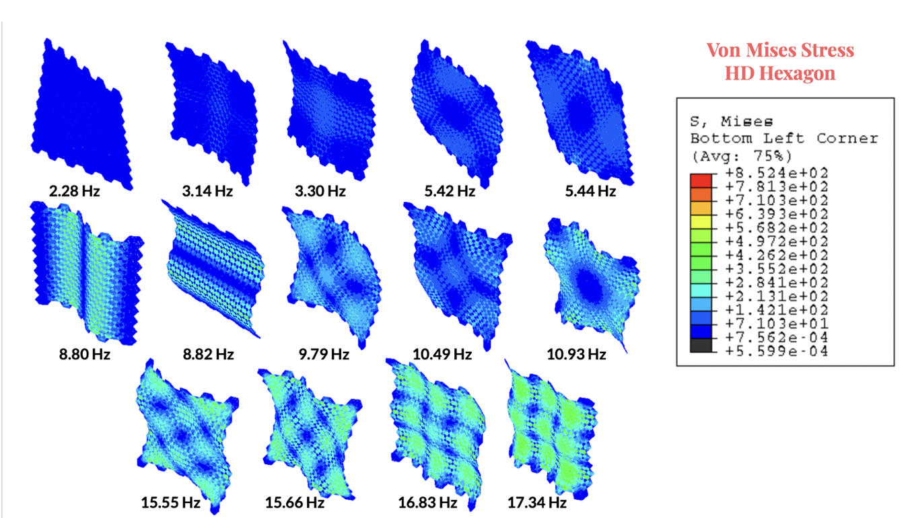
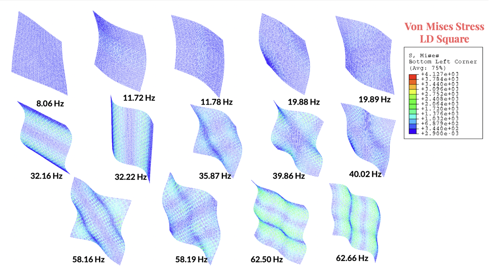
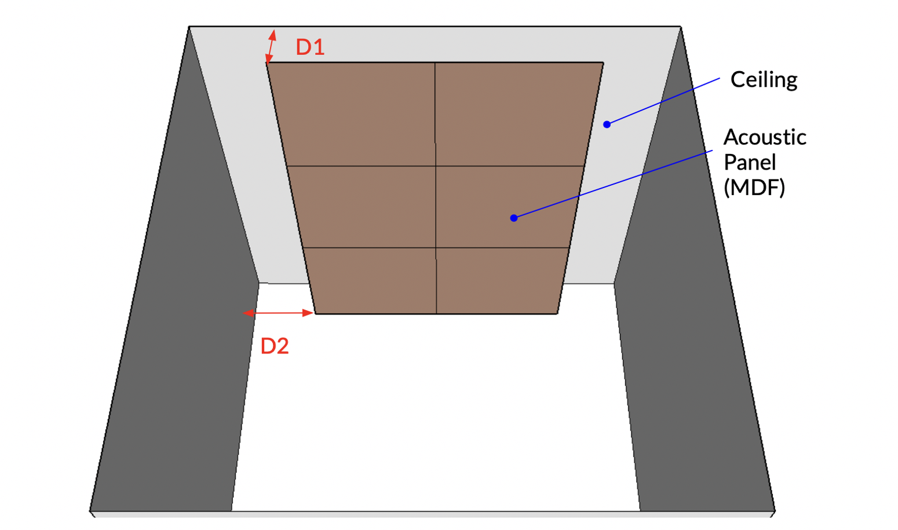

A caption for the above image.

The figure shows results from the modal analysis on high density hexagon MDF kerf panel.The results show possible shapes in which this panel can be reconfigured by inducing low stresses. The reconfiguration of the panels will alter the acoustic wave propagation of sound in the room.

The figure shows results from the modal analysis on low density density square MDF kerf panel.The results show possible shapes in which this panel can be reconfigured by inducing low stresses. The reconfiguration of the panels will alter the acoustic wave propagation of sound in the room.

This image shows that preliminary acoustic simulation is conducted by RAVEN in SketchUp platform.This cube room is modeled as 3 meters high by 3 meters wide by 3 meters deep. Six acoustic panels are horizontally suspended under the ceiling.
All the four side of interior walls as well as ceiling are assigned gypsum board as surface material.The independent variable in this simulation is MDF material, which is assigned to the six panels. In addition, vertical distance between MDF panels and room ceiling (D1), and horizontal distance between panel edges to the wall (D2), are brought up to the discussion about how to calculate the overall absorption coefficient.